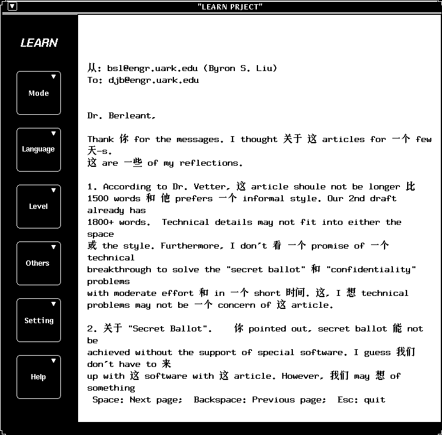
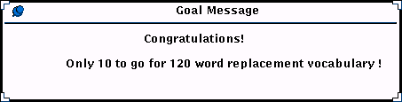
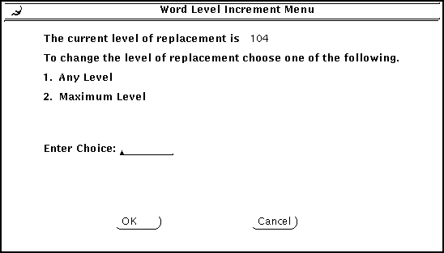

Computer Assisted Language Learning 10 (2) (1997)
LEARN: Software for Foreign Language Vocabulary Acquisition from English Unrestricted Text
LEARN: Software for Foreign Language Vocabulary Acquisition from English Unrestricted Text
Daniel Berleant, Lingyun Shi, Xinxin Wei, Karthikeyan Viswanathan,
Chinlin Chai, Nihad Majid, Yujiang Qu, and Prasad Sunkara
Dept. of Computer Systems Engineering
313 Engineering Hall
University of Arkansas
Fayetteville, AR, 72701 (USA)
Abstract
This paper describes LEARN, a software system for computer assisted
foreign language vocabulary acquisition. LEARN uses unrestricted text
to assist in learning because its potential value is clear:
unrestricted text can be chosen by the learner to suit the learner's
own interests. LEARN processes English unrestricted text by
translating selected English words in it into foreign words before
presenting the text to the learner. Learners can then practice their
foreign language vocabulary in the course of reading the text of their
choice. Currently LEARN can translate a significant number of words
into Chinese and Bengali. Ambiguity in translation is addressed by
``word experts,'' miniature expert systems, each of which translates
some word from English into a particular language by examining its
context. The natural path for the future of LEARN is to extend it by
adding more languages, having it take input in languages other than
English, adding more word experts, adding more extensive interactive
hint facilities for helping readers, allowing it to be used seamlessly
while browsing with a World Wide Web browser, and testing and
evaluating its educational value.
1 The Approach Taken by LEARN
LEARN addresses foreign language vocabulary acquisition by taking
arbitrary English text, translating some of the words into a foreign
language, and displaying the result for the reader to read. Numerous
other CALL systems teach using canned, rather than unrestricted,
text. However, there are also other CALL systems that use unrestricted
text. FROG (Imlah and Boulay, 1985) uses unrestricted
text, emphasizing French syntax instruction as its goal. As a result
of its emphasis on syntax, FROG would be difficult to modify for use
with another language. Another CALL system that works with
unrestricted text is LINGER (Yazdani 1993), which
specifically addresses the problem of providing both syntax
instruction and portability to other languages (of course, a grammar
of any language to which it is to be ported must be available). The eL
system is based on LINGER and had as one goal to support Le-Mail, a
system that uses eL to provide CALL while the learner is writing
email. eL emphasizes interactivity, the writing rather than the
reading mode which is what LEARN addresses, and syntax. eL is
ambitious compared to LEARN, which emphasizes vocabulary while
ignoring the more difficult issue of syntax, and deals with reading
rather than the more difficult task of writing instruction. Like eL
and Le-Mail, LEARN can be used in the context of email. However
Le-Mail is not currently operational while LEARN currently works with
email. Sample output from LEARN is shown next.

Figure 1: Sample output of the LEARN software. The mush email reader
on a Sun workstation running the Solaris operating system was easily
set up to use LEARN to display email messages. The output shown has
several words translated into Chinese, providing those Chinese words
in context for the first author of this paper --- and maybe you the
reader --- to interpret. The level of knowledge of the user determines
how many words are to be translated.
LEARN translates English words into foreign words in unrestricted
text. This approach has the following advantages:
- LEARN can circumvent
the difficulty that many people have in scheduling study time since
no study time needs to be scheduled when using LEARN, if it is used
to process text the user would want to read
even if it was presented completely in English.
- LEARN places
foreign words in meaningful contexts of interest to the reader.
As Miller and Gildea point out, ``The key is to see words in intelligible
contexts,'' and ``to facilitate vocabulary growth . . . read as much as
possible.''
While the potential value of teaching aspects of foreign languages
using unrestricted text is clear, this entails certain compromises compared to
the use of canned text, exemplifying the general principle that the
broader the applicability of software, method, or theory, the weaker
its results tend to be on specific problems. Yet strong treatment of
specific problems has the complementary disadvantage of limited
applicability to other problems. LEARN takes the approach of broad
applicability, working with unrestricted text and providing a framework for
teaching vocabulary in varied target languages. This has led to some
compromises compared to capabilities of software intended for more
limited application. These compromises are based on the
characteristics of the CALL domain and hence exemplify the kinds of
tradeoffs designers of CALL systems must deal with.
- LEARN translates English words in unrestricted text, but
does not attempt translating English syntax. This means learners can
practice foreign language vocabulary with LEARN, but must practice
foreign language syntax by other means. The reason for this limitation
is twofold. Firstly, syntax-sensitive translation of unrestricted
text means, to a significant extent, doing language translation, a
non-trivial task and one which is unnecessary for learning
vocabulary. Secondly, translating syntax into whichever language the
learner wishes requires writing separate grammars for each language
the system is to support, also a non-trivial task and one which runs
counter to the LEARN design philosophy of providing an architecture
that supports many different foreign languages.
Since the output of LEARN contains words from two languages, English
and the language the learner wishes to learn words from, the output is
a language hybrid. What constitutes incorrect (or correct) syntax in a
passage written in two languages is not clear.
- Many words translate differently depending on their
contexts. Thus simplistically using a dictionary for brute force word
substitution is well known to be untenable as a complete strategy for
word translation. LEARN uses word experts to translate ambiguous
words. A word expert is a small expert system which processes its
target word or any of a small set of related target words by examining
the context of an occurrence of a target word. In LEARN, this
processing means disambiguating it to determine its proper
translation. While word experts often work well, they may
disambiguate incorrectly sometimes too. More details on word experts
are presented in section 4.
Next we present more details on which words LEARN translates for a
given user.
2 Matching the User's Level of Knowledge
LEARN starts by translating only a few different words, then with
continued use it gradually and steadily adds new words to the list of
English words it translates when they appear in the input text. Every
time the LEARN program is run, it increments the number of different
words that are subject to replacement by their translations. The
order with which words are added to the list of words to be translated
is determined by their frequency: more frequent words are added to the
list before less frequent ones [8]. Allowing the order with which
words are added to the list to be customized to an individual user's
needs woiuld be useful and is a topic for future work. Some other
design possibilities for keeping up with the increasing level of
knowledge of the learner that CALL system designers might use are
mentioned in Berleant et al. (1994).
More generally, Csikszentmihalyi (1979) found
that keeping people informed of how well they are doing, using a clear
scale of measurement, helps provide intrinsic motivation to an
activity. LEARN addresses this requirement with a periodically
displayed feedback message:

Figure 2: a feedback message indicates to the user how many different words are
now being translated, and suggests a next goal for them to look
forward to.
Csikszentmihalyi also found that the
learner should be able to control the degree of difficulty of the task
to match the learner's own current ability level. LEARN meets this
requirement with a pull-down menu that allows setting the number of
different words to be translated:

Figure 3: allowing the user to reset the number of words
on the list of words to be translated.
3 Implementation Considerations
LEARN runs on IBM PC's and compatibles and on Sun workstations (under
the SunOS and Solaris operating systems). Most of the source code is
suitable for each of those platforms. Hence for much of the
development effort, the same C language source code was used, with C
preprocessor directives ( #if, #endif and #else)
included in the source code to control the matching of source code to
platform in those cases when different source code passages were
required for different platforms. Currently however, there are two
versions of LEARN source code, one for the PC platform and one for the
Sun platform. This was necessitated because of the complexities of
programming the user interface, and was feasible because the
algorithmic core of the program had already reached sufficient
maturity. Further changes to the algorithmic core of the program will
need to be made separately in each version.
Taking our experience as a guide, CALL researchers may find it useful,
when feasible, to develop systems that run on more than one platform,
so that if characteristics of one platform preclude conveniently
developing a certain capability, another platform may allow it. In the
case of LEARN, this happened when we sought to hook the system to an
email reader (currently this useful capability only works on the Sun
platform), and again when we sought to support Bengali (the Bengali
character set we created currently only works on the PC).
Taking our experience again as a guide, developers may want to develop
one version of the source code for all platforms at first, and then
continue development using more than one version when following the
one version approach becomes unwieldy. The later in the development
process that multiple source code versions becomes necessary the
better.
Another lesson we learned is the potential value of developing for a
platform that everyone can use. In particular, if we were starting
over, we would write LEARN in Java for use e.g. with Netscape (which
also has the virtue of supporting some non-ascii character sets, such
as Chinese and Japanese), because a browser like Netscape provides a
platform that should run the same Java program regardless of whether
Netscape is running on a PC or a Sun workstation.
4 Word Experts for Translating Ambiguous Words
A word expert is a small expert system associated with a word or a few
related words of a language, which can analyze occurrences of it in
context. Word experts can be used for a number of tasks:
| Disambiguation task | Example
|
| Sense selection | Does can refer to ``able'' or ``container''? [17]
|
| Word translation | The English can translates more than
one way into most other languages [5].
|
| Accent restoration | In re-accenting de-accented text, if
resume means ``continue'' leave it
unaccented; if it means ``vita'' then
accent it [19].
|
| Part of speech tagging | Is graduate used as a noun or a verb?
|
| Automated spelling correction | Should wurd be changed to
``ward'' or ``word'' or . . . ?
|
| Automated homophone checking | Should their be changed to
``there'' or ``they're''? [1]
|
| Case checking and recovery | In case recovery from upper-cased text
should LISP be left upper case
(a computer language) or made lower
case (a speech impediment)?
|
| Homograph pronunciation selection | Should bass be pronounced as in the
fish or the instrument? [16]
|
| Homophone de-transliteration | In recovering the original Chinese
character for the transliteration
there are several possibilities.
|
| Abbreviation expansion | Restoring vowel diacritics in texts
written in semitic alphabets.
|
Table 1: Some tasks to which word experts have been or could be
applied (adapted from [2]).
In LEARN, a few dozen word experts have been written for translating
words whose translations into some target language (Bengali, Chinese,
or Telugu) are ambiguous unless context is examined. (Telugu is spoken
in some areas of India. LEARN has some word experts for (romanized)
Telugu for test purposes.) A LEARN word expert examines the context
of its target word and then outputs its translation. An example of a
word expert for translating crane into the (romanized) Chinese
qi3 zhong4 ji1 (a machine for lifting heavy things high), he4 (a type
of bird), or wen2 lao3 (a kind of fly) is shown in the next Table.
| Context test | Translation | Sense
|
|
Word before crane is Whooping | he4 | bird
|
|
Word before crane is Siberian | he4 | bird
|
|
Word before crane is Sandhill | he4 | bird
|
|
Word before crane is Crowned | he4 | bird
|
|
Word before crane is White | he4 | bird
|
|
Word before crane is Saurus | he4 | bird
|
|
Word after crane is fly | wen2 lao3 [6] | insect
|
|
Word after crane is flies | wen2 lao3 | insect
|
|
Within +/- 50 words of crane is bird | he4 | bird
|
|
Within +/- 50 words of crane is birds | he4 | bird
|
|
Within +/- 50 words of crane is breeding | he4 | bird
|
|
Within +/- 50 words of crane is sanctuary | he4 | bird
|
|
Within +/- 50 words of crane is baby | he4 | bird
|
|
No condition above is the case | qi3 zhong4 ji1 | machine
|
Table 2: An ordered set of rules comprising a simple word expert for
translating crane into (romanized) Chinese. The first rule in
the list to match the word crane and its context will be
applied, usually producing a correct translation of crane.
This particular word expert has a default condition (the last rule).
Sometimes incorrect translations will occur. For example,
approximately 90% of instances of ``crane flies'' found on the Web
refer to the insect, but others refer to flying birds, resulting in an
incorrect translation by the expert above. Adding more complex rules
that test the context more carefully and perhaps doing simple
syntactic analysis (cf. [15]) would produce improved word expert
performance.
Previous work by others on word experts was reviewed by Berleant (1995).
4.1 Word experts in LEARN
Word experts for translation of ambiguous words which were selected by
the person writing the expert were written for translations into
Bengali, Chinese, or Telugu. They were written by students for a
senior design project, a term project in an artificial intelligence
course, and a master's degree project. The writers did quite limited
and informal testing of the experts they wrote as needed, in their
judgement, to write the experts.
To subsequently evaluate the word experts, we located ten test
sentences containing the word and used the word expert to translate
the word in the test sentences. The test sentences were found using
currently leading World Wide Web search services (Lycos,
http://lycos.cs.cmu.edu, and Alta Vista,
http://altavista.digital.com). The target word was typed to the
search service which then retrieved documents containing it. Test
sentences or phrases containing the word from the documents were each
processed by the relevant word expert to get the predicted
translation. While the test material was representative of the World
Wide Web, it was not always representative of material off the
Web. Surprisingly many ``sentences'' in Web documents are actually
just phrases, often not well formed, and many word
occurrences are part of proper nouns (e.g. ``Bear Paw Credit Union''
contains the target word ``bear'').
To assess the word experts a native speaker of the language then
classified each translation as correct, incorrect, unsure, or
untranslated (in the case of a word expert which chose not to hazard a
translation for some contexts). The results illustrate the
limitations of producing word experts by college educated individuals
without specialized knowledge of CALL or NLP in an unstructured
setting, who are native speakers of the destination language but not
of the source language (English), who are dividing their time among
several tasks of which writing word experts was just one, and for whom
any quality control was due to their own intrinsic motivation since
the instructor did not know the target languages.
Results are analyzed and summarized as follows. For each word the
percentage of wrong translations was tabulated. The distribution of
these percentages over the set of 60 different word experts was highly
bimodal with peaks at 0% wrong and 100% wrong. The low point
between the modes was at approximately 50% wrong translations. Let us
hypothesize that the 50% wrong score separates the word experts that
are clearly defective in a major way from those that aren't (an
argument in favor of this hypothesis is that a single, well chosen,
default translation for a word used for all its occurrences will
result in less than 50% of the translations being wrong for most
polysemous words). Of those word experts which were not clearly
defective as just described, the median performance was 10% wrong. In
other words, excluding those word experts that were clearly defective,
the average word expert translated its target word properly 90% of
the time.
The lessons learned from this preliminary study suggest guidelines
for more effective word expert construction by students:
- Word experts for translation should benefit from being written
by a team consisting of a native speaker of the target language and a
native speaker of the source language. The word experts in this
preliminary investigation were written only by native speakers of the
target language, leading to situations like translating the most
common meaning of ``trespass'' (to go somewhere one isn't allowed)
into a Chinese word meaning ``bother'' which of course, being a wrong
translation, contributed to the undesired mode of the bimodal
distribution.
- Word expert construction needs to be done using sample passages
containing the target word that have been found in the wild, rather
than passages written for the purpose. This would eliminate the
problem of word experts choosing an uncommon meaning as a default
translation. For example, fan translates differently depending
on whether it refers to ``blower'' or ``enthusiast.'' The word expert
for fan defaulted to a translation meaning ``blower'' whereas, at
least on the Web as of this writing, the ``enthusiast'' meaning is
much more common. Lorge's work (1938, 1939, 1947) may also be useful
as it lists the meanings of words and their frequencies. The
Thorndike-Barnhart dictionaries (e.g. [18]) use Lorge's work, ordering
definitions of a word first by part of speech, but within a part of
speech category by frequency of the definition.
- Quality control of the word experts, including testing on
downloaded passages containing the target words, needs to be part of
the word expert engineering process. Ignoring this requirement in this
preliminary study led, for example, to seven words (12%) which were
translated wrong in 100% of the test cases.
- The poor grammatical quality of a significant proportion of the
passages on the Web indicates that word experts should not rely too
heavily on grammatical analyses. It is much easier, too, to simply
test for the locations and identities of nearby words.
- It would help word experts to be able to look for a sought
context word a fair distance from the target. The word experts we have
only examine contexts near the target word. However, Gale et al. (1993)
found that in the Canadian parliamentary proceedings
context words had an effect on the translation of the target up to a
distance of 10,000(!), although the marginal contribution of 10-word
stretches of context became insignificant beyond a distance of 50
words. The LEARN architecture thus needs to be augmented to allow word
experts to check for context words up to a distance of 50 from the
target.
- Word experts should take capitalization into account, as this
can indicate meaning. For example, ``Crane'' is a surname found
frequently on the Web which perhaps should not be translated at all.
- Some target languages make word translation using word experts
difficult. For example, translating a word into Russian usually
requires grammatical analysis since Russian words tend to contain
inflections that indicate its grammatical role in the passage, so that
role would need to be determined in order to successfully translate
the word. Grammatical analysis has been done in word expert based
systems (Rieger; Small; Adriaens; and Hahn; see [15]) but this led to
greatly increased complexity in the resulting systems.
5 Future work
The LEARN project is a working prototype of a novel CALL system. Its
current shortcomings help to motivate future work. One area that needs
to be addressed is testing of the LEARN software by persons
unconnected with the technical development of LEARN, ordinary users
who wish to practice their foreign language vocabulary. Another area
is development of sophisticated methods of assisting users in
pedagogically sound ways when they want help upon encountering an
unfamiliar foreign word or one they've forgotten. LEARN does provide
some hints capabilities, such as allowing the user to call up a screen
listing the words that have been translated so far in the document and
their translations, allowing the user to set LEARN to display
translations in brackets next to the untranslated words (instead of
only the translations), and making a guessing game available
[3]. However a more sophisticated treatment is necessary.
In the area of computational linguistics, the most pressing problem
for LEARN, and a problem whose solution would be of significant
benefit for many systems, is automatic acquisition of word experts,
discussed next.
5.1 Machine Learning of Word Experts
A sizeable lexicon of word experts for translation would be useful,
not only to LEARN but to automatic translation systems and bilingual
dictionary developers as well. However, such a lexicon would be
tedious to generate by hand. Fortunately, machine learning methods
could be used to create it. Such a lexicon of automatically derived
word experts for word translation would be a useful addition to human
knowledge.
Some previous work on machine learning of word experts has appeared.
Word experts for disambiguation can be learned automatically, though
relying on hand-tagged example passages (Weiss 1973). Fully automatic
learning of word experts can be accomplished using suitable corpora
(Yarowsky 1994). Those works do not address the
particular disambiguation task of translating words into a foreign
language. To apply machine learning techniques to word translation
will require suitable parallel corpora (i.e. the same material in both
languages), some of which are currently obtainable (e.g. the Canadian
parliamentary proceedings). Such parallel corpora must be aligned
such that the words in one translation of the corpus, at least those
words for which word experts are desired, are each matched with its
translation in the other translation of the corpus. Given such input
data, each instance of a word, its translation, and the location and
identity of its context words constitutes a structured example
suitable for use as input to any of a number of machine learning
algorithms (cf. Langley 1996).
Given a parallel corpus, the problem of aligning it appropriately
could be addressed using a method such as that of Gale and Church
(1993) who even state that they have already aligned and will make
available 90 million words of the Canadian parliamentary
proceedings. Their method aligns sentences. Obtaining alignment at the
word level is addressed by Brown et al. (1993). Kay and Roscheisen
(1993) give an alternative, integrated treatment of both sentence
alignment and word correspondence. Once obtained, a suitably aligned
corpus provides actual translations of words which serve as
disambiguation tags, and their contexts constitute examples from which
disambiguation rules may be derived.
Acknowledgements
The authors thank Mallick Abdul and Chiou-guey Liaw for assisting in
testing the word experts.
References
- A few students in the first author's text
processing course wrote preliminary word experts for this purpose for
their term projects.
-
Berleant, D., Engineering Word Experts for Word Disambiguation,
Natural Language Engineering 1 (4) 339-362.
- Berleant, D., S. Lovelady, and K.
Viswanathan, A Foreign Vocabulary Learning Aid for the Networked World
of Tomorrow: The LEARN Project, SIGICE Bulletin 19 (3)
(Feb. 1994) 22-29.
- Brown, P. F., S. A. Della Pietra, V. J. Della
Pietra, and R. L. Mercer, The Mathematics of Statistical Machine
Translation: Parameter Estimation, Computational Linguistics
19 (2) (June 1993) 263-311. Also in Armstrong, S.,
Using Large Corpora, MIT Press, 1994.
- Brown, P. F., S. A. Della Pietra, V. J. Della
Pietra, and R. L. Mercer, Word-Sense Disambiguation Using Statistical
Methods, Proceedings, 29th Annual Meeting of the Association for
Computational Linguistics (1991) 264-270.
- Chang, F.-J., ed., A. S. Hornby Oxford Advanced
Learner's Dictionary of Current English, Revised Third Edition,
Taiwan Dong Hua Co., 1989.
- Csikszentmihalyi, M., Intrinsic
Rewards and Emergent Motivation, in M. R. Lepper and D. Greene (eds.),
The Hidden Costs of Reward, Lawrence Erlbaum Associates,
Morristown, NJ, 1979, pp. 205-216.
- Francis, W. N. and H. Kucera, Frequency
Analysis of English Usage: Lexicon and Grammar, Houghton Mifflin
Company, Boston, 1982. (Another option: relative frequencies of
limited numbers of words can be easily found with online WWW search
services.)
- Gale, W. A. and K. W. Church, A Program for
Aligning Sentences in Bilingual Corpora, Computational
Linguistics 19 (1) (March 1993) 75-102. Also in Armstrong,
S., Using Large Corpora, MIT Press, 1994.
- Gale, W. A., K. W. Church, and D. Yarowsky, A
Method for Disambiguating Word Senses in a Large Corpus,
Computers and the Humanities 26 (1993) 415-439.
- Imlah, W. G. and J. B. H. du Boulay, Robust
Natural Language Parsing in Computer-Assisted Language Instruction,
System 13 (2) (1985) 137-147.
- Kay, M. and M. Roscheisen,
Text-Translation Alignment, Computational Linguistics 19
(1) (March 1993) 121-142. Also in Armstrong, S., Using Large
Corpora, MIT Press, 1994.
- Langley, P., Elements of Machine Learning,
Morgan Kaufmann Publishers, Inc., San Francisco, 1996.
- Lorge, I., The English Semantic Count,
Teacher's College Record 39 (1) 65-77, 1937. Lorge, I., A
Semantic Count of English Words, 3 volumes, Institute of Educational
Research, Teachers College, Columbia University, New York, 1938 and
1979. Lorge, I., The Semantic Count of the 570 Commonest English
Words, Institute of Educational Research, Teachers College, Columbia
University, New York, 1949 and 1979.
- The most complex and ambitious word expert approach was that of
Chuck Rieger and Steven Small, further developed independently by
Geert Adriaens and Udo Hahn. Syntactic analysis was important in their
word experts. The work is reviewed in [2]. See, for example, Small,
S. and C. Rieger, Parsing and Comprehending with Word Experts (A
Theory and its Realization), in W. Lehnert and M. Ringle, eds.,
Strategies for Natural Language Processing (pp. 89-147), Lawrence
Erlbaum Associates, New Jersey, 1982.
- Sproat, R., J. Hirschberg, and D. Yarowsky, A
Corpus-Based Synthesizer, in Proceedings,
International Conference on Spoken Language Processing, 1992.
- Stone, P. J., Improved Quality of Content
Analysis Categories: Computerized-Disambiguation Rules for
High-Frequency English Words, in G. Gerbner, O. R. Holsti,
K. Krippendorff, W. J. Paisley, and P. J. Stone, eds., The
Analysis of Communication Content, John Wiley and Sons,
1969.
- Thorndike, E. L. and C. L. Barnhart, eds.,
Thorndike-Barnhart Student Dictionary (Updated Edition),
HarperCollins Publishers, 1993 (see e.g. p. 14).
- Yarowsky, D., Decision Lists for Lexical
Ambiguity Resolution: Application to Accent Restoration in Spanish and
French, Proceedings of the 32nd Annual Meeting of the Association
for Computational Linguistics (ACL-94), World Wide Web location
http://xxx.lanl.gov/abs/cmp-lg/9406034, 1994.
- Weiss, S. F., Learning to Disambiguate,
Information Storage and Retrieval 9 (33-41),
1973.
- Yazdani, M., ed., Multilingual
Multimedia, Intellect Books, Oxford, Great Britain, 1993.